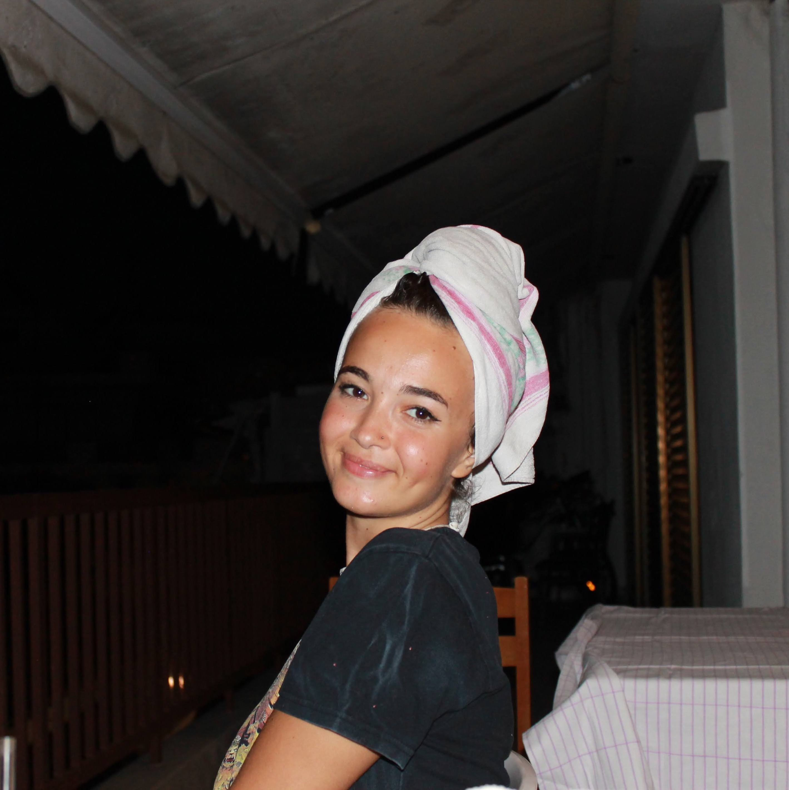
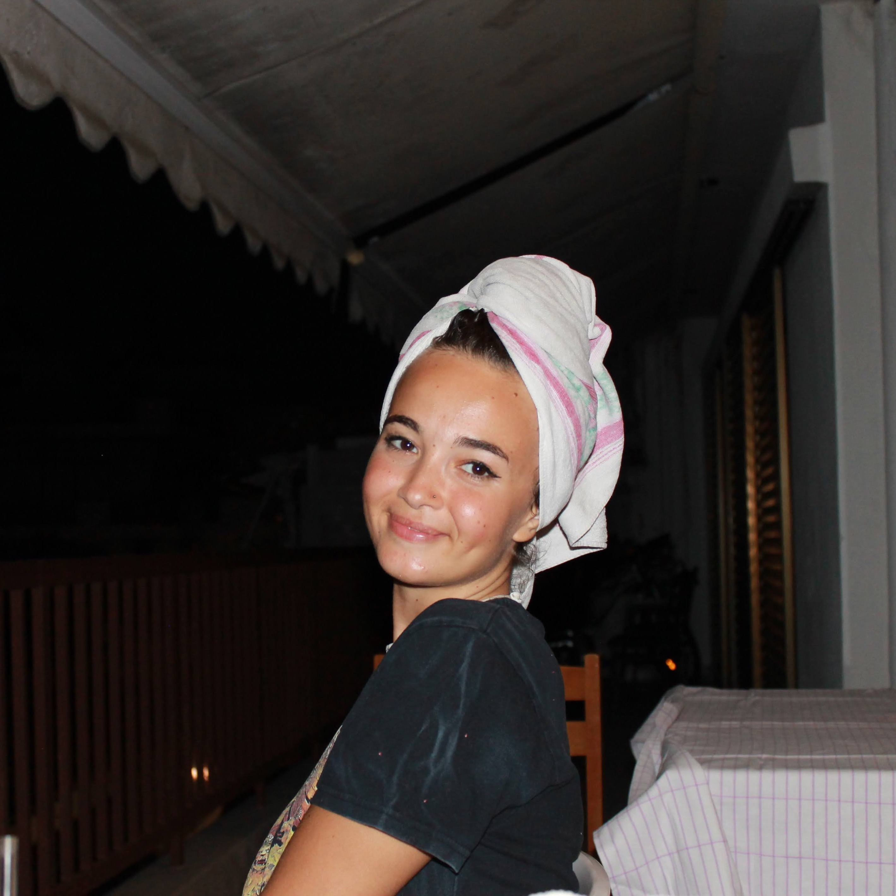
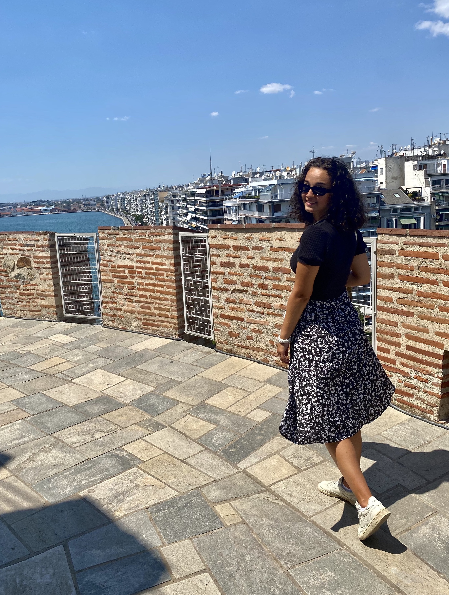

Where I call Home:Thessaloniki, Greece
|
|
Area of Study:Electrical Engineering & Product Design
|
Favorite Foods:Sushi & Mushrooms
|
Most Used AppSpotify
|
|
click down to read more! |
Eleni Karyofyli is a fifth year senior studying at Lehigh University studying Electrical Engineering and Product Design. While she might call Lehigh her home for now, Eleni is originally from Thessaloniki, Greece (which is about six hours north of Athens for those of you who haven’t heard)! It’s not surprising that she also loves to travel.
I asked her where she would head first and she said, “I would want to explore Asia first, and then go with the flow from there”. However, at the end of the day, Eleni would eventually like to make her way back to Greece and settle down on a little island to see what adventure might come next.
Maybe the next adventure for her is becoming that world renown fashion designer that is in all the world renown fashion shows and on all the global magazine covers. Her pieces would be making bold statements all over the world and people are going crazy over her ideas!
Or maybe the next adventure is becoming a painter. A satisfying, but very challenging, job of creating the abstract into reality, or vise versa and taking reality and creating abstract! Yet, if either of those jobs fall through, Eleni wouldn’t mind going into consulting after she graduates.
I asked her a couple more generic ‘get to know you type questions’, for example, she loves dogs and specifically iced coffee (it’s just so much better)! Whenever she is put on the spot and asked to share something about herself, her go to fun fact is, “I love mushrooms. I could eat them with every meal”.
Not only does she love mushrooms, but she also enjoys sushi. Of course, sushi is best when it's being shared with friends and family. She’ll order sushi as long as salmon is on it. Along with going out to eat, she loves spending time with her friends. Either it be a relaxing night in or out at night exploring the town there's no adventure her and her friends wouldn’t do.
There’s nothing Eleni loves more than someone having good fashion (after all, her dream job is becoming a fashion designer). If you have an outfit of medium wash high waisted jeans with a crop top and sneakers, there’s no way you could have a bad day. Perhaps make a statement with a monochromatic red outfit (red is an all time favorite color) and there's no way you wouldn’t steal the show.
But these well wishes solely exclude those who favor crocs as their go to shoe. “I’d rather be in pain all day than wear crocs”. Eleni draws a hard line when it comes to croc-wearers. Try any other shoe instead. Not only is she not a fan of crocs, but one of her biggest pet peeves is when people try to fish for compliments from her. Something about having to ask people for compliments just ticks her the wrong way.
When talking with Eleni, I noticed she was always quick with a joke or a whitty follow up comment. It wasn’t hard to create conversation and half the time Eleni and I would end up going on tangents about this, that, and the other thing that would half answer the question I originally asked. She is friendly, warm and has chic style. Really, this list could just go on and on.


|

|
|  |

|